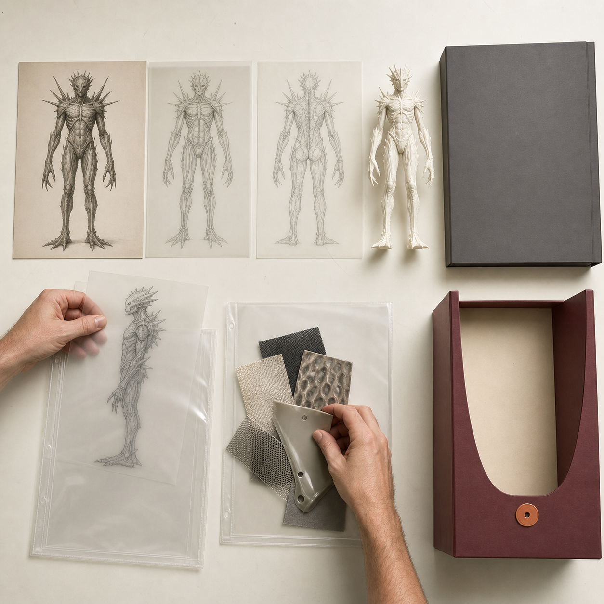

已有 IP 学员，课前请准备这 6 类资料
已经有角色、插画或系列作品，并不等于可以直接开始建模。很多创作者的资料分散在不同设备、聊天记录和旧文件夹里：主版本不清楚，背面结构没有说明，材质参考与结构参考混在一起，合作或引用内容的公开边界也没有单独记录。课前准备要解决的，不是“多带一些图”，而是让 Day 1 能迅速回答六个问题：作品当前以哪个版本为准；哪些特征必须保留；画面外的结构怎样理解；表面材质如何判断；实体准备做什么、做到多大；哪些内容可以制作和公开。
具体问题
已经有角色、插画或系列作品，并不等于可以直接开始建模。很多创作者的资料分散在不同设备、聊天记录和旧文件夹里：主版本不清楚，背面结构没有说明，材质参考与结构参考混在一起，合作或引用内容的公开边界也没有单独记录。
课前准备要解决的，不是“多带一些图”，而是让 Day 1 能迅速回答六个问题：作品当前以哪个版本为准；哪些特征必须保留；画面外的结构怎样理解；表面材质如何判断；实体准备做什么、做到多大；哪些内容可以制作和公开。
核心判断
资料数量不能替代资料之间的对应关系。有效的课前包应让原始作品、角色设定、结构视图、材质参考、实体目标和版权记录指向同一个候选项目。
六类资料齐全，也不代表方案自动具备可制作性。它们的作用是提前暴露缺口，让 Day 1 把时间用于筛选、取舍和范围锁定，而不是临时找图、辨认版本或追问来源。缺失内容可以明确标记“待补”，不必为了看起来完整而猜测或伪造设定。
步骤或标准
第一类：原始作品与源文件。准备候选作品的清晰图、可编辑源文件或可用导出文件，并标明当前采用版本。社媒截图适合预览，却通常不足以判断细节、颜色和文件用途。若存在多个方案，应区分主版本、候选版本和已经弃用的旧版本。
第二类：角色设定与核心辨识点。整理角色背景、比例、表情、道具和系列关系，并指出最不能丢失的轮廓或局部特征。实体化不等于把二维画面里的每一项装饰都保留下来；先明确辨识点，才能在结构简化时知道哪些地方不能轻易改动。
第三类：正面、侧面、背面与局部结构。补充背部、底部、手部、配件连接和被遮挡区域。没有完整三视图并不意味着不能参加，但必须把未知区域标出来，由 Day 1 判断是补图、简化、改用局部出口，还是进入备选方案。
第四类：颜色、材质与表面参考。将主色、辅助色、金属、透明、硬质或柔软等参考分开，并说明每张参考图究竟参考颜色、光泽、纹理还是触感。氛围图可以帮助沟通方向，却不能自动成为结构或生产依据。
第五类：实体目标、用途与尺度。说明希望做成桌面摆件、浮雕、局部样或其他出口，给出预计尺寸、摆放方式和最想验证的问题。用途与尺度会影响姿态、重心、厚度、拆件和后处理范围；只写“做成手办”仍不足以锁定方案。
第六类：版权、授权与公开边界。记录作品属于原创、合作、委托、授权还是引用，并保留来源、作者和可使用范围。还要分别说明哪些材料可以用于课堂制作、网站展示和社媒公开。边界不清的内容不进入公开展示。
常见错误
- 一次打包几十张图片，却不标明哪个版本当前有效。
- 只有正面成图，默认背面、底部和连接处可由建模工具自动补全。
- 不说明参考图的用途，把氛围、材质、结构和比例混在一起。
- 只说想做成某类商品，不说明预计尺寸、摆放方式和优先验证项。
- 把网络图片、合作作品或委托成果默认视为可公开使用。
- 使用“最终版”“最终版2”等文件名，现场仍无法确认版本关系。
与五天课程的关系
这六类资料首先服务 Day 1。课程会据此筛选候选作品，检查版权状态，锁定实体用途、尺寸、结构复杂度与视觉输入，并建立主方案、备选方案和降级方案。完成这些判断后执行 Gate 1，确认是否具备进入三维生成的必要条件。
通过 Gate 1 的资料进入 Day 2 的三维初模与 Nomad 人工修模；仍有缺口的部分先补视觉输入、调整形态或缩小范围。这样可以避免把版本、结构或版权问题拖到切片和打印阶段。
事实 / 案例 / 完成度边界
本文基于课程既定的课前准备、Day 1 项目诊断、版权检查、结构转译与 Gate 1 流程。图中的资料架、档案匣、角色资料和比例样均为中性课程流程示意，不是往期学员成果，也不代表已经发生课堂、报名、制作、展览或销售。
六类资料是一套准备框架，不要求每位参与者已有成熟设定、完整三视图或全部源文件；缺失项应如实记录。资料齐全不等于模型无需人工修正，也不保证一次打印成功。版权边界须按具体来源、合作和授权文件核验，本文不构成法律意见。
五天课程不承诺人人完成商业级精修、正式包装印刷、批量生产、正式展览或销售。

长期招生｜青岛｜3–5 天短训｜评估后预约跟班｜每班最多 10 人。查看当前学习方案与费用
填写报名资料 →